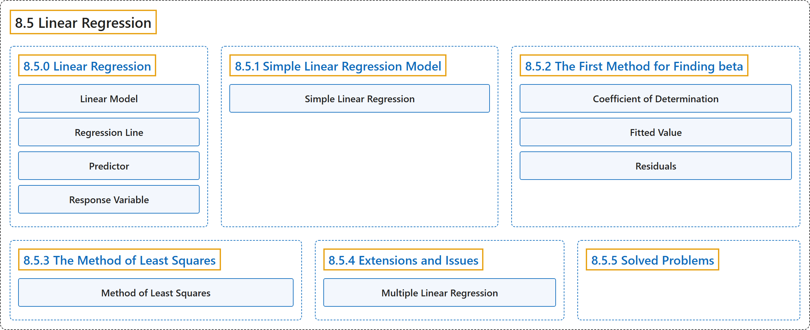

8.5 Linear Regression
Classification

Glossary
| Term | Definition | 中文翻译 | Source |
|---|---|---|---|
| 8.5 Linear Regression 线性回归 |
(No definition) | （无定义） | Pishro-Nik, 2014, section 8.5 |
| 8.5.0 Linear Regression 线性回归 |
(No definition) | （无定义） | Pishro-Nik, 2014, section 8.5.0 |
| Linear Model 线性模型 |
"A linear model is probably the simplest model that we can define, where we write" | 线性模型可能是我们能定义的最简单的模型，其中我们写作 | Pishro-Nik, 2014, section 8.5.0 |
| Regression Line 回归直线 |
"is called the regression line." | 称为回归直线。 | Pishro-Nik, 2014, section 8.5.0 |
| Predictor 预测变量 |
"The variable \(x\) is called the predictor or the explanatory variable, and the random variable \(Y\) is called the response variable." | 变量 \(x\) 称为预测变量或解释变量，随机变量 \(Y\) 称为响应变量。 | Pishro-Nik, 2014, section 8.5.0 |
| Response Variable 响应变量 |
"the random variable \(Y\) is called the response variable. That is, here, we use \(x\) to predict/estimate \(Y\)." | 随机变量 \(Y\) 称为响应变量。也就是说，这里我们用 \(x\) 来预测或估计 \(Y\)。 | Pishro-Nik, 2014, section 8.5.0 |
| 8.5.1 Simple Linear Regression Model 简单线性回归模型 |
(No definition) | （无定义） | Pishro-Nik, 2014, section 8.5.1 |
| Simple Linear Regression 简单线性回归 |
"Here, we provide a model that is called the simple linear regression model." | 这里我们给出一个称为简单线性回归的模型。 | Pishro-Nik, 2014, section 8.5.1 |
| 8.5.2 The First Method for Finding beta 求β的第一种方法 |
(No definition) | （无定义） | Pishro-Nik, 2014, section 8.5.2 |
| Coefficient of Determination 决定系数 |
"For the observed data pairs, \((x_1,y_1)\), \((x_2,y_2)\), \(\cdots\), \((x_n,y_n)\), we define coefficient of determination, \(r^2\) as" | 对于观测数据对 \((x_1,y_1)\), \((x_2,y_2)\), \(\cdots\), \((x_n,y_n)\)，我们定义决定系数 \(r^2\) 为 | Pishro-Nik, 2014, section 8.5.2 |
| Fitted Value 拟合值 |
"Here, \(\hat{y}_i\) is the predicted value of \(y_i\) using the regression formula." | 这里 \(\hat{y}_i\) 是利用回归公式得到的 \(y_i\) 的预测值（拟合值）。 | Pishro-Nik, 2014, section 8.5.2 |
| Residuals 残差 |
"which are called the residuals." | 称为残差。 | Pishro-Nik, 2014, section 8.5.2 |
| 8.5.3 The Method of Least Squares 最小二乘法 |
(No definition) | （无定义） | Pishro-Nik, 2014, section 8.5.3 |
| Method of Least Squares 最小二乘法 |
"This method is called the method of least squares, and for this reason, we call the above values of \(\hat{\beta_0}\) and \(\hat{\beta_1}\) the least squares estimates of \(\beta_0\) and \(\beta_1\)." | 这种方法称为最小二乘法，因此我们把上述 \(\hat{\beta_0}\) 和 \(\hat{\beta_1}\) 的值称为 \(\beta_0\) 和 \(\beta_1\) 的最小二乘估计。 | Pishro-Nik, 2014, section 8.5.3 |
| 8.5.4 Extensions and Issues 推广与问题 |
(No definition) | （无定义） | Pishro-Nik, 2014, section 8.5.4 |
| Multiple Linear Regression 多元线性回归 |
"A natural extension to the simple linear regression is multiple linear regression." | 简单线性回归的一个自然推广是多元线性回归。 | Pishro-Nik, 2014, section 8.5.4 |
| 8.5.5 Solved Problems 例题详解 |
(No definition) | （无定义） | Pishro-Nik, 2014, section 8.5.5 |
References
Pishro-Nik, H. (2014). Introduction to probability, statistics, and random processes. Kappa Research. Retrieved October 28, 2026, from https://www.probabilitycourse.com/